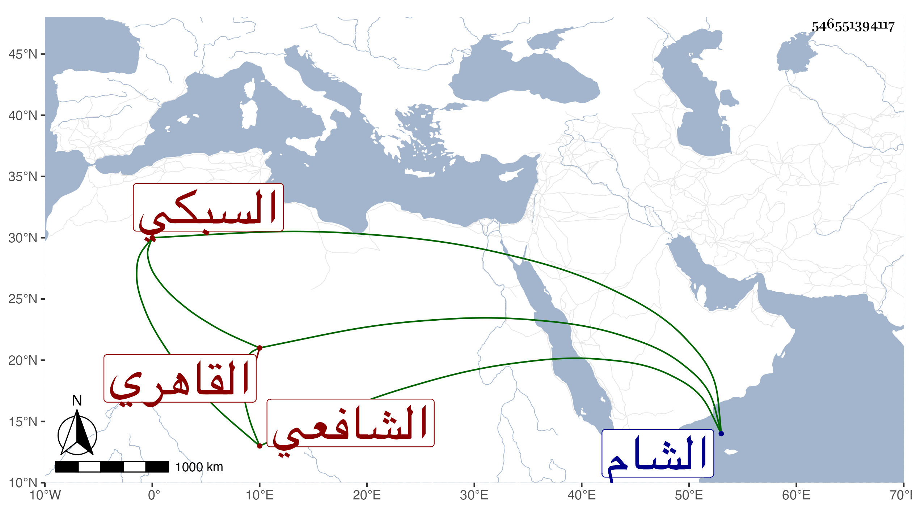

0902Sakhawi.DawLamic.ITO20230111-ara1.EIS1600.546551394117
Biography ID: 546551394117
101
عبد البر بن محمد بن محمد بن محمد بن عبد البر بن يحيى سري الدين أبو اليسر بن القاضي جلال الدين بن القاضي بدر الدين بن البهاء أبي البقاء السبكي الأصل القاهري الشافعي ويعرف كأبيه وجده الآتي ذكرهما بابن أبي البلقاء . نشأ شابا جميل الصورة كأبيه طيب النغمة فاشتغل وفضل ولازم الولي العراقي في الأمالي وغيرها ، وسمع الحديث من لفظ الكلوتاتي وعلى النور الفوي وآخرين ولم يتصون ، ودرس بالأقبغاوية وغيرها وناب في الحكم قبل موته بسنة ثم سافر إلى الشام ورجع فمات في سابع عشر رجب سنة ثلاث وثلاثين ولم يكمل الثلاثين فإن والده مات في سنة إحدى عشرة وابنه صغير وكان هذا تزوج ابنة الزين أبي بكر بن علي المشهدي فاستولدها ولده البهاء أبا البقاء محمدا ولذا استقر البهاء المشهدي في تدريس الأقبغاوية .
